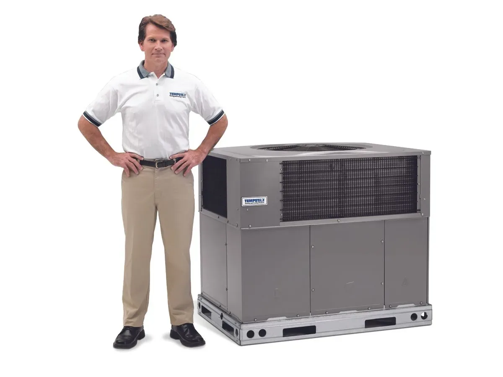

Reliable package unit AC installation in Spring Hill, Brooksville, and Hernando County — efficient, quiet packaged systems installed by your local certified Tempstar dealer.
When it comes to keeping homes comfortable in West Central Florida’s heat and humidity, package unit systems offer a practical, space-saving solution. At Radco Air Conditioning & Appliance, we specialize in professional package unit AC installation throughout Spring Hill, Brooksville, and the broader Hernando County area. As a certified Tempstar dealer, we bring reliable equipment and careful workmanship to every project so your system delivers consistent cooling and long-term value.
Package units combine heating and cooling components into a single outdoor cabinet. This design works especially well for homes where indoor space for separate components is limited or when replacing an older all-in-one system. If you are exploring your options, our team can help determine whether a package unit or another configuration best fits your home.
For a closer look at our conditioning installation approaches across our service area, check out our central air conditioning installation guide.
Reach out to Radco today at (352) 684-7821 if you would like to discuss whether a package unit suits your Spring Hill or Brooksville property.

A package unit houses the compressor, condenser, evaporator, and often the heating section in one weather-resistant cabinet placed outside the home — typically on a ground pad or rooftop curb. This all-in-one design simplifies installation in certain homes and can reduce the need for extensive indoor modifications.
Many homeowners in Hernando County appreciate the compact footprint and straightforward service access. In contrast, split systems separate the indoor and outdoor components, which works well when attic or closet space is available for the air handler.
To understand how package units compare with split systems for your specific situation, review our guide on AC split system installation.
Package units often make sense when:
We also handle full heating system replacements when needed, since many package units provide both heating and cooling.
Florida’s humid climate places extra demands on any cooling system. Proper sizing and installation help manage moisture levels while keeping energy use reasonable. According to ENERGY STAR guidance, improper installation can reduce system efficiency by up to 30%, which is why we emphasize careful evaluation and precise setup on every job.
If your package unit is no longer performing reliably, our technicians can assess whether repair or full replacement offers the better long-term path. Contact our team for an honest evaluation tailored to your home in the Spring Hill or Brooksville area.
Every installation we perform follows a structured approach focused on performance, safety, and minimal disruption:
This methodical process helps your equipment deliver the reliable comfort you expect. For more context on general installation standards we follow across Hernando and Pasco counties, see our air conditioning services overview.
The Tempstar packaged equipment we install includes thoughtful engineering aimed at efficiency, durability, and quiet operation — important qualities in our local climate.
Proper ductwork design and condition also play a major role in how efficiently your package unit performs.
As your local certified Tempstar dealer, we select and install models suited to West Central Florida homes and back them with manufacturer warranties and our own workmanship standards.
Homeowners who work with us often notice steadier temperatures, lower operating noise, and more predictable energy use once a properly matched and installed package unit is in place. Because the entire system is factory-assembled and tested as a unit, performance can align well from day one when installation follows best practices.
Local service matters too. Our technicians understand the specific challenges of installing and maintaining systems in Spring Hill, Brooksville, and surrounding communities. We remain available for ongoing maintenance and support long after the initial installation.
If you are weighing options for your home, schedule time with our team. We provide transparent recommendations rather than one-size-fits-all solutions.
You can see the full list of communities we serve across Hernando, Pasco, and Citrus counties on our service area page.
Most package unit installations can be completed in one to two days, depending on site conditions and any necessary duct or electrical work. We coordinate timing around your schedule and take care to protect your property throughout the process.
After startup, we walk you through basic operation and maintenance steps, such as filter changes and seasonal checks. Regular professional maintenance helps preserve efficiency and catch small issues before they become larger ones. Ask us about our maintenance agreement options when you schedule your installation consultation.
If your current system is leaving you uncomfortable this season, call Radco at 352-684-7821 or 727-869-8861 to arrange an evaluation.
Most straightforward replacements are completed within one to two days. More complex jobs involving duct modifications or electrical upgrades may require additional time. We provide a clear timeline after the initial assessment.
Yes. The all-in-one design works well for many local homes, especially where indoor space is limited. Proper installation and regular maintenance help manage humidity and deliver reliable cooling through hot Florida summers.
Basic homeowner tasks include regular filter changes. Professional tune-ups once or twice a year help keep components clean, check electrical connections, and verify performance.
Common indicators include rising energy bills, uneven cooling, frequent repairs, or an age of 12–15 years or more. A professional inspection provides the clearest answer for your specific equipment.
Yes. We evaluate your home’s structure and recommend the most suitable placement — ground level or rooftop — based on access, aesthetics, and performance considerations.
Tempstar equipment typically includes manufacturer warranties on major components such as the compressor and heat exchanger. Our installation workmanship is also covered. We review specific warranty details for the model recommended for your home.
Experience with packaged systems, proper licensing, attention to sizing and ductwork, and local reputation all matter. We encourage homeowners to ask about load calculations, permitting, and post-installation support.
Costs vary based on equipment size, efficiency rating, site conditions, and any necessary modifications. We provide detailed, written estimates after an in-home evaluation so there are no surprises.
If you are ready to explore a new or replacement package unit for your Spring Hill, Brooksville, or Hernando County home, Radco Air Conditioning & Appliance is here to help. As a long-standing local company and certified Tempstar dealer, we focus on equipment and installation practices that support efficient, dependable comfort in our climate.
If you’re also thinking about other comfort upgrades, we can discuss how a new package unit fits into a complete home solution.
Our team takes the time to understand your home and goals before recommending solutions. Whether you need a full assessment, have questions about your current system, or want to schedule installation, we make the process straightforward.
Call us today at (352) 684-7821 (Hernando), (352) 513-3539 (Citrus) or (727) 869-8861 (Pasco), or visit our request form to get started. Let’s discuss how a professionally installed package unit can improve comfort in your home this season and beyond.